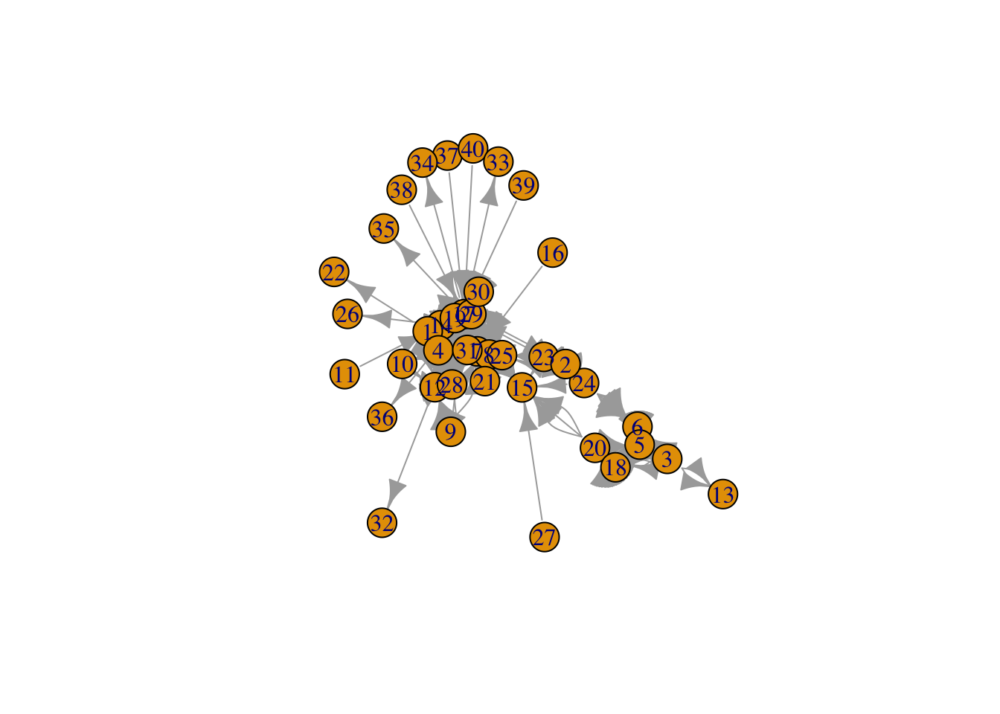
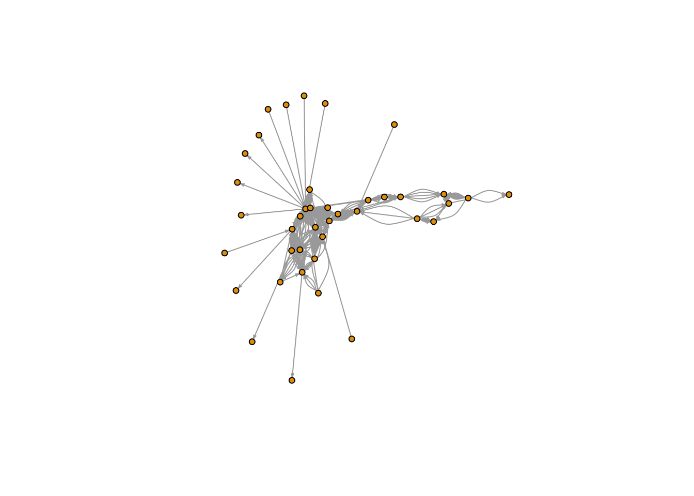
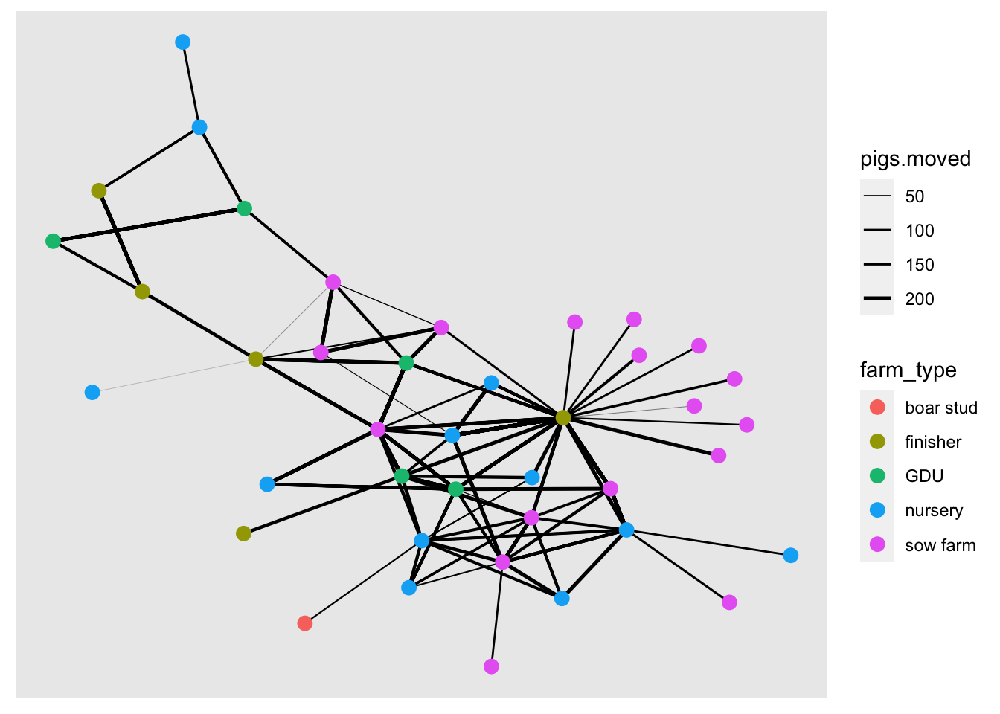
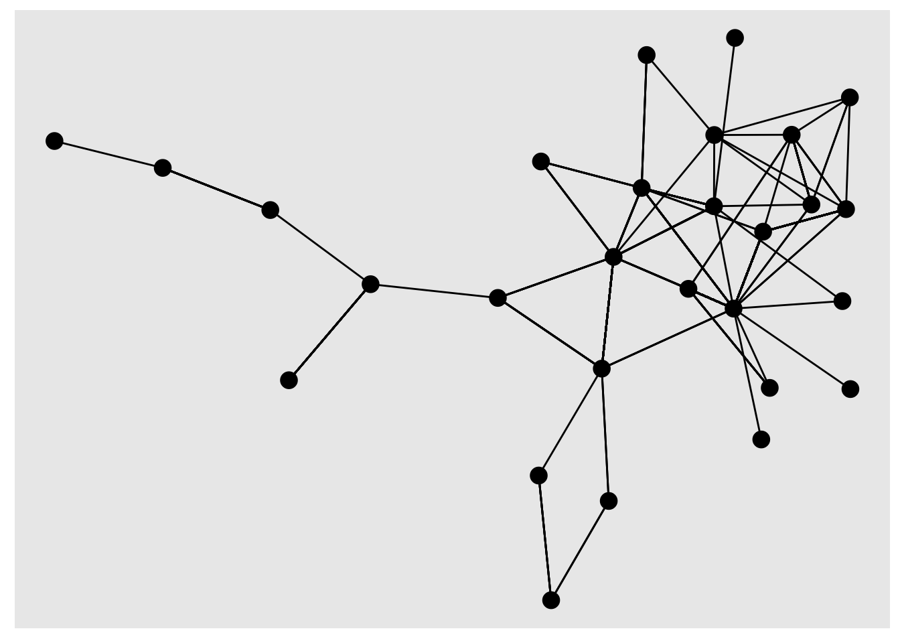

Introduction to Network analysis
In this lab we will start making our first network objects, obtain network statistics and some visualization of the data.
1 Creating the network
# Libraries we will use:
library(dplyr) # for data manipulation
library(ggplot2) # For making figures
library(ggraph) # For visualization of the networks
library(igraph) # for network analysis
library(tidygraph) # tidyverse friendly network analysis
# Loading the data from the STNet package ------------
# Load the data for nodes
node <- STNet::SwinePrem %>% # load the data from the STNet library
mutate(id = as.character(id)) # change the id to variable to character
# Load the data for edges
edge <- STNet::SwineMov %>%
mutate(id_orig = as.character(id_orig), id_dest = as.character(id_dest))The data sets we will be using are:
nodewhich includes the information of the farmsedgewhich includes the information for the movements between the farms.
We use the function as_tbl_graph() to create the network
from a data.frame. This function takes as arguments:x which
requires the contacts data and assumes that contacts are directed. If we
print the results, we will see a object from the class
tbl_graph, which we will explain:
net <- as_tbl_graph(edge)
net## # A tbl_graph: 40 nodes and 1611 edges
## #
## # A directed multigraph with 1 component
## #
## # A tibble: 40 × 1
## name
## <chr>
## 1 17
## 2 12
## 3 14
## 4 11
## 5 7
## 6 9
## # ℹ 34 more rows
## #
## # A tibble: 1,611 × 6
## from to date pigs.moved type_orig type_dest
## <int> <int> <chr> <int> <chr> <chr>
## 1 1 7 8/20/15 160 finisher sow farm
## 2 1 7 8/20/15 76 finisher sow farm
## 3 1 3 9/11/15 155 finisher nursery
## # ℹ 1,608 more rowsThe results of printing the object will show us the number of nodes and edges, we can see that our network has 40 nodes and 1611 edges. Then we can also see the attributes for the nodes (which in this case there is only the name) and the edges (which for this example has from, to, date, pigs.moved, type_orig, and type_dest).
1.1 Adding extra attributes
We can treat this object like two data frames that are joined by an
key or identification variable. Whenever we want to access one of the
data frames to modify it, we can use either the function
activate() or when using the pipes we can use
%N>% to call the nodes or %E>% to call
the edges. In the next example we will add the rest of the node
information to our tbl_graph
net <- net %N>% # <- Notice we are including 'N' inside our pipe to specify we want to access the nodes
left_join(node, by = c('name' = 'id')) # Now we join to the node data frame to include other variables# We can ask for the nodes data specifically to see the changes
net %N>%
data.frame()1.2 Calculating centrality measures
We can use other network centrality measures such as outdegree, closeness, betwenness, among others. In the following code chunk, we will calculate more centrality measures:
net <- net %>% # This is our entwork data
mutate(outdegree = centrality_degree(mode = 'out', loops = F), # calculate the outdegree
closeness = centrality_closeness(), # calculate the closeness
betweenness = centrality_betweenness(), # calculate betweenness
Nbs = neighborhood.size(graph = .) # calculate the number of neighbors
)
# lets have a look at our network with the new variables
net## # A tbl_graph: 40 nodes and 1611 edges
## #
## # A directed multigraph with 1 component
## #
## # A tibble: 40 × 9
## name name.y lat long farm_type outdegree closeness betweenness Nbs
## <chr> <fct> <dbl> <dbl> <fct> <dbl> <dbl> <dbl> <dbl>
## 1 17 US Farm Lea… 41.6 -93.6 finisher 68 0.04 220. 20
## 2 12 Uncle Bill'… 41.7 -92.7 nursery 5 0.0233 46.1 10
## 3 14 Western Iow… 42.4 -96.3 nursery 15 0.0345 64.7 9
## 4 11 Loess Hills… 41.7 -95.9 nursery 1 0.0217 0 2
## 5 7 Kloubec Koi 41.8 -91.8 GDU 3 0.0217 25.2 9
## 6 9 Kroul Farms 41.9 -91.5 nursery 6 0.0270 0 4
## # ℹ 34 more rows
## #
## # A tibble: 1,611 × 6
## from to date pigs.moved type_orig type_dest
## <int> <int> <chr> <int> <chr> <chr>
## 1 1 7 8/20/15 160 finisher sow farm
## 2 1 7 8/20/15 76 finisher sow farm
## 3 1 3 9/11/15 155 finisher nursery
## # ℹ 1,608 more rowsTo visualize the network we can use the function
plot().
#plot network
plot(net)
This figure looks a bit messy, to make it more informative we can
visualize dome of the parameters. We use the arguments
edge.arrow.size to adjust the size of the arrowhead,
vertex.size to adjust the node size, and
vertex.label to remove the names of the nodes.
#make it clearer: adjust size, remove labels#
plot(net, # Our network object
edge.arrow.size=0.2, # define the arrow size
vertex.size=4, # the sie of the node
vertex.label=NA) # We remove the name of the nodes
2 Network visualization
We can use base R to make our figures, but since in this workshop we
have been focusing on ggplot2, we will use the library ggraph which is
based in ggplot2. The way the library ggraph works is very
similar to ggplot2, we use the function
ggraph() to set our empty canvas, same way we would do with
the function ggplot() in
ggplot2. The libraryggraph` also introduces a bunch of new
geometry tipes for both the nodes and the edges.
2.1 Node attributes
2.1.1 Color
We can get specific attributes from the tbl_graph inside
the aes() argument, similar to what we would do for
ggplot2. In the following plot, we will set the node color to the type
of farm. Let’s try it:
ggraph(graph = net) + # First we set our empty canvas
geom_edge_link() + # Add the edges
geom_node_point(aes(color = farm_type), size = 3) # add the nodes
2.1.2 Node size
We will use the indegree value to assign the node size. First we will
calculate indegree using the function centrality_degree()
with the argument mode = "in", and we will also get rid of
the loops with the argument loops = F.
# First calculate the indegree for the nodes:
net <- net %>%
mutate(indegree = centrality_degree(mode = 'in', loops = F))
# Now we use ggraph to visualize it in the network
ggraph(net, layout = 'kk') + # this is our empty canvas
geom_edge_link(aes(width = pigs.moved)) + # Add the edges
geom_node_point(aes(color = farm_type, size = indegree)) + # Add the nodes
scale_edge_width(range = c(0.01, 0.9)) # we set the range for the width of the edges2.2 Layouts
We can change the position of the nodes using the argument
layout. If we don’t specify any layout, ggraph will
automatically set the layout ‘stress’. Force directed layouts place the
nodes in fixed places based on various criteria. The layouts ‘nicely’
and ‘kk’ force the network in clear layouts, based on the position of
the nodes in the network in terms of connectivity. They also attempt to
keep the distance between connected nodes fixed.
# Plot with layout nicely
ggraph(net, layout = 'nicely') +
geom_edge_link() + # Add the edges
geom_node_point(aes(color = farm_type), size = 3) + # add the nodes
labs(title = 'Layout nicely')# Plot with layout kk
ggraph(net, layout = 'kk') +
geom_edge_link() + # Add the edges
geom_node_point(aes(color = farm_type), size = 3) +
labs(title = 'Layout KK')You can read more about the different layouts available HERE
Exercise: Let’s have a look at different layouts to see how the network changes. Try using a couple of different layouts to produce a different figure (i.e. ‘fr’, ‘lgl’, ‘graphopt’).
2.3 Edge attributes
We can change the size of the edge to represent the number of pigs moved between nodes
ggraph(net, layout = 'kk') +
geom_edge_link(aes(width = pigs.moved)) + # Add the edges
geom_node_point(aes(color = farm_type), size = 3) +
scale_edge_width(range = c(0.01, 0.9))
Exercise: explore plotting the network using the different centrality measures to change its color or size.
3 Further manipulation of the network
We can use some of the functions for data manipulation such as
filter(), since filtering uses boolean operations, we can
use some network properties for the filtering
3.1 Filtering by edge variables
We will use the function filter() to select only
observations where there was more than 150 animals moved
net %E>% # This is the network
filter(pigs.moved > 150) %>% # We filter the edges for only the ones with > 150 animals
# we visualize the graph:
ggraph() +
geom_edge_link() +
geom_node_point(size = 4)
You will notice that there are a few of isolated nodes that does not connect to the main network, this is because we only filtered the edges, but not the nodes.sometimes we want this, but other times we would like to remove the noeds as well. For this we will add an extra line tot the code we previously did:
net %E>% # This is the network
filter(pigs.moved > 150) %N>% # We filter the edges for only the ones with > 150 animals
filter(!node_is_isolated()) %>% # THIS IS THE LINE WE ADDED to filter the isolated nodes out
# we visualize the graph:
ggraph() +
geom_edge_link() +
geom_node_point(size = 4)
Notice that in the code I use both the operators %N>%
and %E>% depending on what I am filtering.
3.2 Filtering by node neighborhood
We can filter the network for the neighborhood of a specific node.
The function convert() will convert the network to the
nodes that are connected with a specific node.
id <- 1 # first we define the id of the node we want
#then we can visualize its neighborhood:
net %>% # this is our network
convert( # We use the function convert() to subset our network
to_local_neighborhood, # we specify that we want to convert to a local neighborhood
node = id, # this is the node id we will filter by
order = 1, # this is the order of nbs
mode = 'all' # the type of contact
) %>%
# then we create a variable to color our index node:
mutate(index = ifelse(.tidygraph_node_index == id, '1', '0')) %>%
# and visualize the network
ggraph() +
geom_edge_link() +
geom_node_point(aes(col = index, shape = index), size = 5)3.3 Exporting the data
We can export the network in tables to use them in another session. To do that we will first generate a table for only the nodes:
node <- net %N>%
data.frame()We can export the data in multiple formats, here we will export the network in rds first (which is a format that can be read by R), then we will export it in csv format.
# Export the object in rds format:
readr::write_rds(net, "Data/Outputs/net.rds")
# We will also export the edges with the distance and coordinates
write.csv(edge, "Data/Outputs/edge.csv", row.names = F)
write.csv(node, "Data/Outputs/node.csv", row.names = F)This lab has been developed with contributions from: Jose Pablo Gomez-Vazquez,
Jerome
Baron, and Beatriz
Martinez-Lopez.
Feel free to use these training materials for your own research and
teaching. When using the materials we would appreciate using the proper
credits. If you would be interested in a training session, please
contact: jpgo@ucdavis.edu